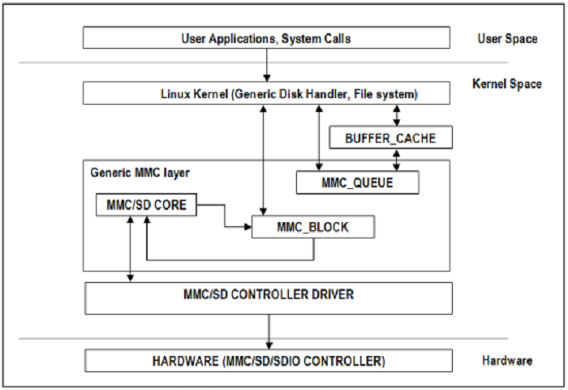

3.2.2.20. MMC/SD¶
3.2.2.20.1. Introduction¶
The multimedia card high-speed/SDIO (MMC/SDIO) host controller provides an interface between a local host (LH) such as a microprocessor unit (MPU) or digital signal processor (DSP) and either MMC, SD® memory cards, or SDIO cards and handles MMC/SDIO transactions with minimal LH intervention.
MMC/SD Driver Architecture
3.2.2.20.2. References¶
JEDEC eMMC Homepage [http://www.jedec.org/category/technology-focus-area/flash-memory-ssds-ufs-emmc]
SD ORG Homepage [http://www.sdcard.org]
3.2.2.20.3. Acronyms & Definitions¶
Acronym |
Definition |
|---|---|
MMC |
Multimedia Card |
HS-MMC |
High Speed MMC |
SD |
Secure Digital |
SDHC |
SD High Capacity |
SDIO |
SD Input/Output |
Table: MMC/SD: Acronyms
3.2.2.20.4. Features¶
The SD/MMC driver supports the following features:
Support ADMA for DMA transfers
HS400 speed mode
Support for both built-in and module mode
ext2/ext3/ext4 file system support
3.2.2.20.5. Supported High Speed Modes¶
SD
Platform |
SDR104 |
DDR50 |
SDR50 |
SDR25 |
SDR12 |
|---|---|---|---|---|---|
J721e-EVM |
N |
Y |
Y |
Y |
Y |
J7200-EVM |
Y |
Y |
Y |
Y |
Y |
J721s2-EVM |
Y |
Y |
Y |
Y |
Y |
J784s4-EVM |
Y |
Y |
Y |
Y |
Y |
J721e-sk |
Y |
Y |
Y |
Y |
Y |
AM68-sk |
Y |
Y |
Y |
Y |
Y |
AM69-sk |
Y |
Y |
Y |
Y |
Y |
eMMC
Platform |
DDR52 |
HS200 |
HS400 |
|---|---|---|---|
J721e-EVM |
Y |
Y |
N |
J7200-EVM |
Y |
Y |
Y |
J721s2-EVM |
Y |
Y |
Y |
J784s4-EVM |
Y |
Y |
Y |
AM69-sk |
Y |
Y |
Y |
J721e-sk and AM68-sk does not support eMMC.
3.2.2.20.6. Driver Configuration¶
The default kernel configuration enables support for MMC/SD driver as built-in to kernel. TI SDHCI driver is used. Following options need to be configured in Linux Kernel for successfully selecting SDHCI driver for J721E.
Enable SDHCI support (CONFIG_MMC_SDHCI)
Device Drivers -->
MMC/SD/SDIO card support -->
<*> Secure Digital Host Controller Interface support
Enable SDHCI platform helper (CONFIG_MMC_SDHCI_PLTFM)
Device Drivers -->
MMC/SD/SDIO card support -->
Secure Digital Host Controller Interface support -->
<*> SDHCI platform and OF driver helper
Enable SDHCI controller for TI device (CONFIG_MMC_SDHCI_AM654)
Device Drivers -->
MMC/SD/SDIO card support -->
<*> Support for the SDHCI Controller in TI's AM654 SOCs
3.2.2.20.7. Steps for working around SD card issues¶
In some cases failure can be seen while using some SD cards,
Kernel fails to enumerate SD, thus failing to mount the root file system. This is the case when kernel hangs during boot with a message similar to the following,
[ 2.563279] Waiting for root device PARTUUID=835b171b-02...
A lot of SDHCI register dumps logs getting printed continuously,
[ 10.811723] mmc1: Got data interrupt 0x00000002 even though no data operation was in progress. [ 10.820321] mmc1: sdhci: ============ SDHCI REGISTER DUMP =========== [ 10.826745] mmc1: sdhci: Sys addr: 0x00000080 | Version: 0x00001004 [ 10.833169] mmc1: sdhci: Blk size: 0x00007200 | Blk cnt: 0x00000080 [ 10.839593] mmc1: sdhci: Argument: 0x00000000 | Trn mode: 0x00000033 [ 10.846016] mmc1: sdhci: Present: 0x01f70000 | Host ctl: 0x0000001f [ 10.852440] mmc1: sdhci: Power: 0x0000000f | Blk gap: 0x00000080 [ 10.858864] mmc1: sdhci: Wake-up: 0x00000000 | Clock: 0x00000007 [ 10.865287] mmc1: sdhci: Timeout: 0x00000000 | Int stat: 0x00000000 [ 10.871711] mmc1: sdhci: Int enab: 0x03ff008b | Sig enab: 0x03ff008b [ 10.878134] mmc1: sdhci: ACmd stat: 0x00000000 | Slot int: 0x00000000 [ 10.884557] mmc1: sdhci: Caps: 0x3de8c801 | Caps_1: 0x18002407 [ 10.890981] mmc1: sdhci: Cmd: 0x00000c1a | Max curr: 0x00000000 [ 10.897404] mmc1: sdhci: Resp[0]: 0x00000b00 | Resp[1]: 0x0075cf7f [ 10.903828] mmc1: sdhci: Resp[2]: 0x32db7900 | Resp[3]: 0x00000900 [ 10.910251] mmc1: sdhci: Host ctl2: 0x0000000b [ 10.914682] mmc1: sdhci: ADMA Err: 0x00000000 | ADMA Ptr: 0x00000000a2e90200
Given below are the list of various workarounds that can be done in the device tree node to get SD card working. The workarounds are ordered in increasing order of reducing performance.
All the changes mentioned below, are to be done in the MMCSD device tree node corresponding to the SD instance. This is usually the first (index starting from zero) instance.
Restricting to a given speed mode
By default the kernel driver tries to enumerate a SD card in the highest supported speed mode. Given below is the order in which the driver tries to enumerate a SD card
SDR104
DDR50
SDR50
SD HS
SD legacy
These speed capabilites can be masked using device tree property sdhci-caps-mask.
Limit to DDR50:
sdhci-caps-mask = <0x00000002 0x00000000>Limit to SDR50:
sdhci-caps-mask = <0x00000006 0x00000000>Limit to SD HS:
sdhci-caps-mask = <0x00000007 0x00000000>Limit to SD legacy:
sdhci-caps-mask = <0x00000007 0x00200000>&sdhci1 { /* SD/MMC */ vmmc-supply = <&vdd_mmc1>; vqmmc-supply = <&vdd_sd_dv>; pinctrl-names = "default"; pinctrl-0 = <&main_mmc1_pins_default>; ti,driver-strength-ohm = <50>; disable-wp; sdhci-caps-mask = <0x00000006 0x00000000>; /* Limiting to SDR50 speed mode */ };Limiting to SD HS speed mode can also be done by using the property
no-1-8-v. This disable switching to 1.8V which is required for UHS speed modes(SDR104, DDR50, SDR50)&sdhci1 { /* SD/MMC */ vmmc-supply = <&vdd_mmc1>; vqmmc-supply = <&vdd_sd_dv>; pinctrl-names = "default"; pinctrl-0 = <&main_mmc1_pins_default>; ti,driver-strength-ohm = <50>; disable-wp; no-1-8-v; /* disabling all the UHS modes */ };
Reduce the bus width
The SD interface supports a bus width of 4. It can be reduced to 1 by changing the
bus-widthdevice tree property from 4 to 1.diff --git a/arch/arm64/boot/dts/ti/k3-am62-main.dtsi b/arch/arm64/boot/dts/ti/k3-am62-main.dtsi index 7bbfcb158842..2ef974f7206f 100644 --- a/arch/arm64/boot/dts/ti/k3-am62-main.dtsi +++ b/arch/arm64/boot/dts/ti/k3-am62-main.dtsi @@ -424,7 +424,7 @@ ti,itap-del-sel-sdr12 = <0x0>; ti,itap-del-sel-sdr25 = <0x0>; ti,clkbuf-sel = <0x7>; - bus-width = <4>; + bus-width = <1>; }; sdhci2: mmc@fa20000 {